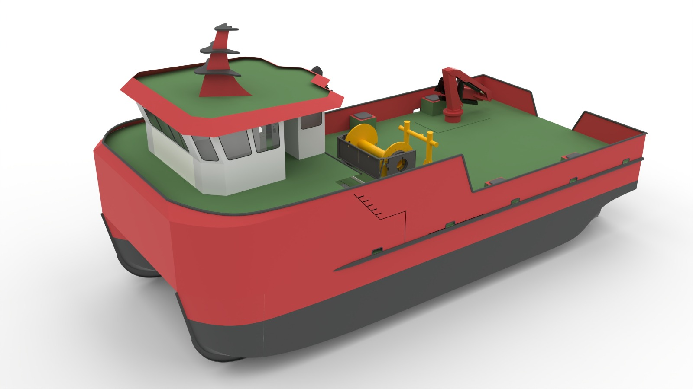
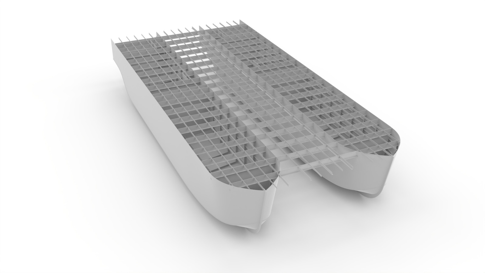
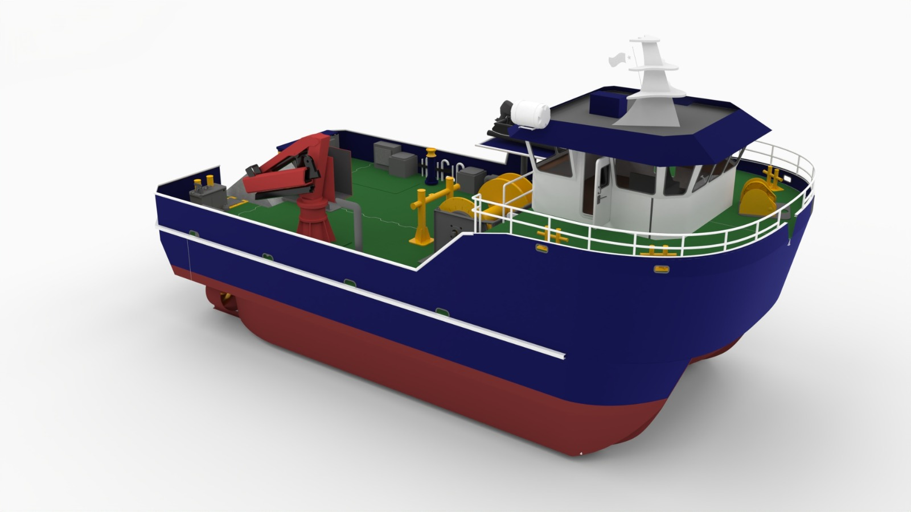
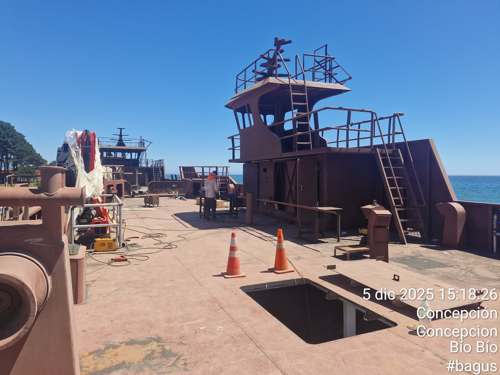
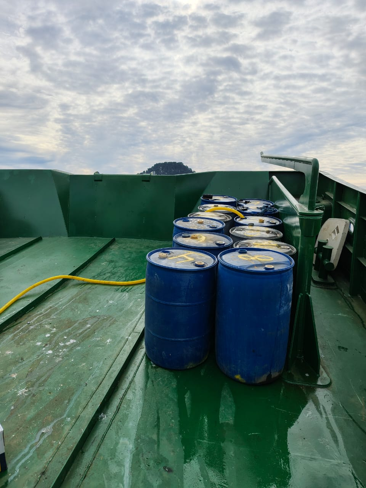
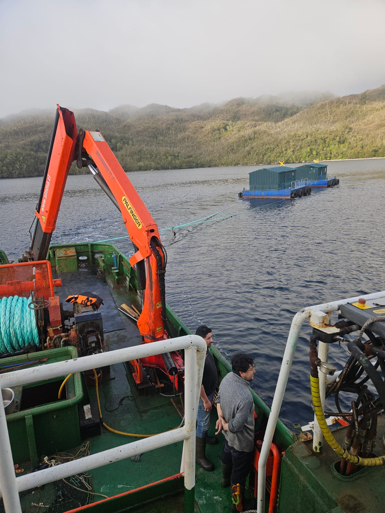
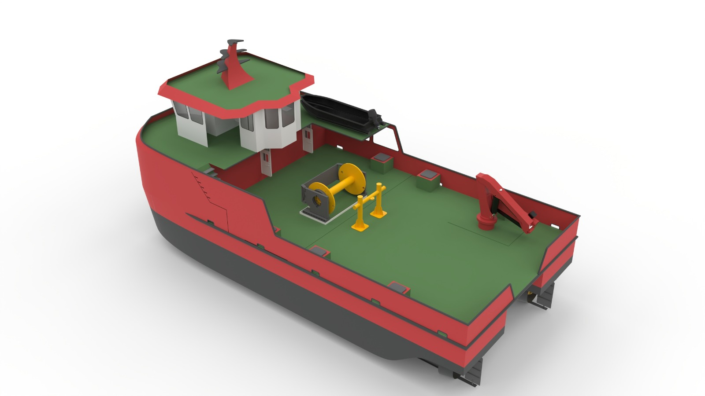
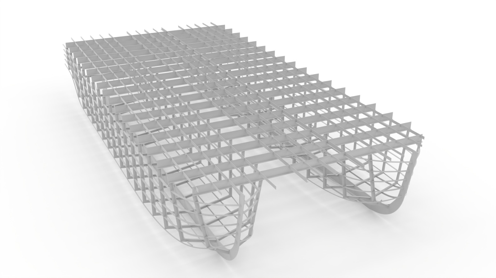
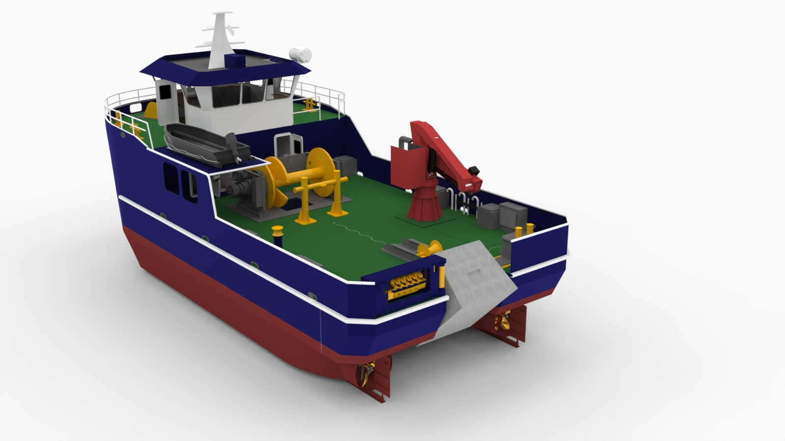
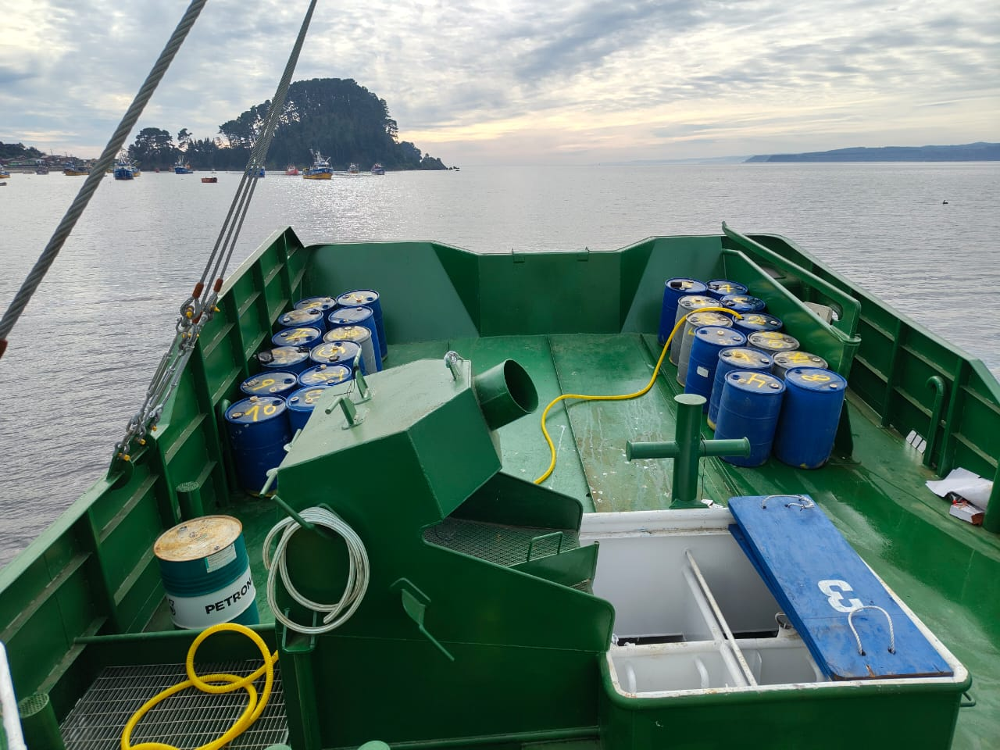

Proyecto 01
Catamarán Multipropósito
Ingeniería estructural, planos constructivos, escantillones y apoyo técnico para construcción de catamarán destinado a operaciones marítimas.
Desarrollamos soluciones técnicas para embarcaciones, artefactos navales, centros de cultivo y operaciones marítimas especializadas.
CAUVA SpA es una empresa chilena especializada en ingeniería naval, diseño de embarcaciones, certificación marítima, inspección técnica y apoyo operacional.
Desarrollamos proyectos desde la ingeniería conceptual hasta la construcción y puesta en servicio, entregando soluciones técnicas adaptadas a las necesidades de cada cliente.
Conocer servicios →
Ingeniería, documentación, inspecciones y apoyo operacional para proyectos navales, marítimos y acuícolas.
Inspección mediante ultrasonido para cascos, cubiertas, estanques y estructuras navales.
Inspección técnica de pontones, plataformas, embarcaciones de apoyo e infraestructura flotante.
Ensayos para determinar desplazamiento, centro de gravedad KG y estabilidad inicial.
Desarrollamos modelos tridimensionales para validar diseños antes de la construcción, optimizando tiempos, costos, disposición general y desempeño operacional.



Proyectos reales desarrollados con respaldo técnico, documentación de ingeniería y experiencia aplicada en terreno.
Ingeniería estructural, planos constructivos, escantillones y apoyo técnico para construcción de catamarán destinado a operaciones marítimas.

Ingeniería integral, planos estructurales, documentación técnica, regularización marítima y antecedentes para operación.

Desarrollo estructural, apoyo documental y soporte técnico para proyecto marítimo industrial.

Diseño naval, cálculos estructurales, planos y documentación técnica para construcción y operación.
Servicios de alto valor para certificación, evaluación estructural, estabilidad y operación marítima.

Realización de ensayos para determinar centro de gravedad KG, desplazamiento y estabilidad inicial de embarcaciones nuevas o modificadas.
Evaluación de condición estructural mediante medición de espesores por ultrasonido en cascos, cubiertas, estanques y estructuras navales.


Evaluación técnica de pontones, plataformas, embarcaciones de apoyo, infraestructura flotante y operaciones asociadas a centros de cultivo.
Participación directa en proyectos de ingeniería, construcción naval y operación marítima.
Desde la idea inicial hasta la certificación, documentación y puesta en servicio.
Diseños desarrollados con criterio constructivo y experiencia operacional.
Proyectos desarrollados bajo criterios normativos y buenas prácticas de ingeniería.




Cuéntenos su requerimiento técnico y le orientaremos con una solución adecuada para su proyecto marítimo.
Diseño · Certificación · Inspección · Operaciones Marítimas